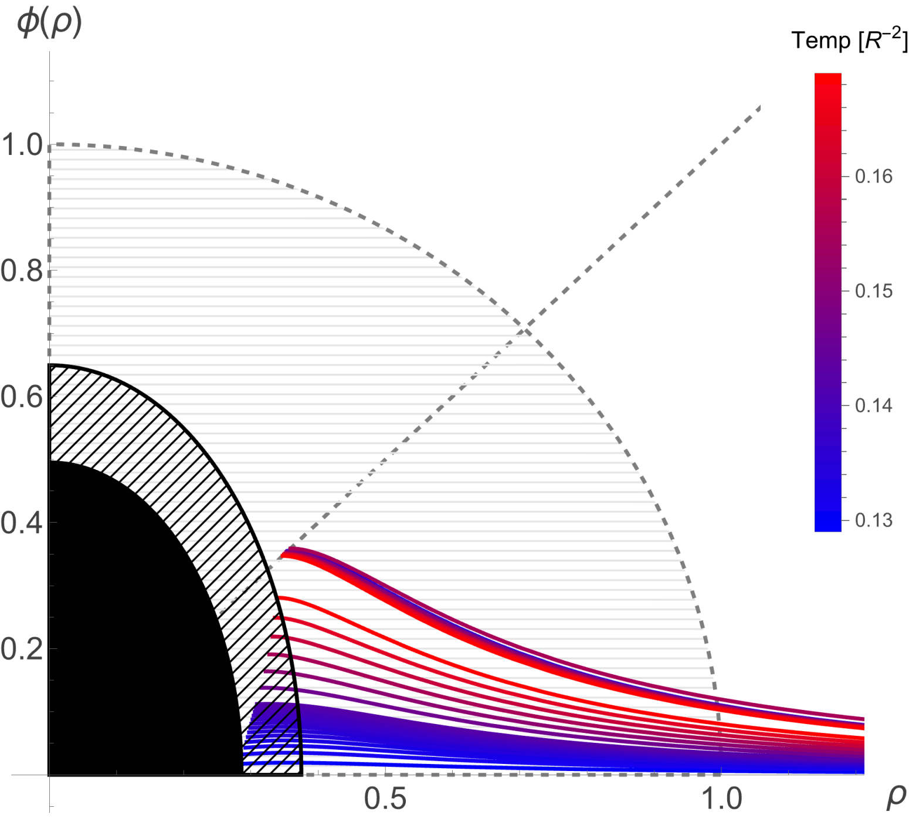
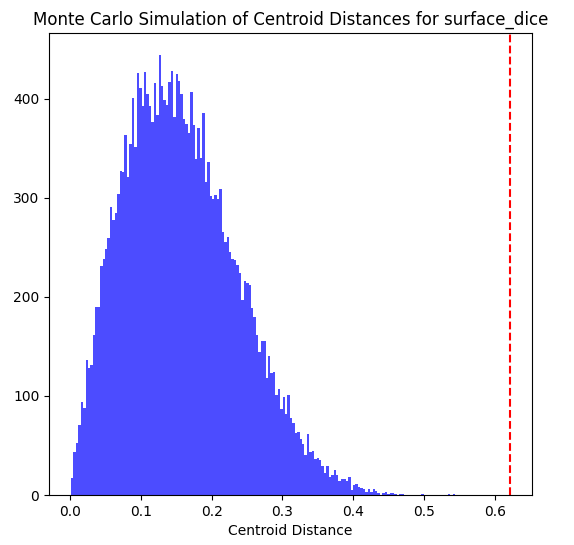

Theoretical Physicist | AI Developer
PhD candidate in theoretical particle physics with experience developing machine learning algorithms for clinical research. Exploring opportunities to apply this experience to quantum error correction (QEC) and the development of fault-tolerant quantum computers.

